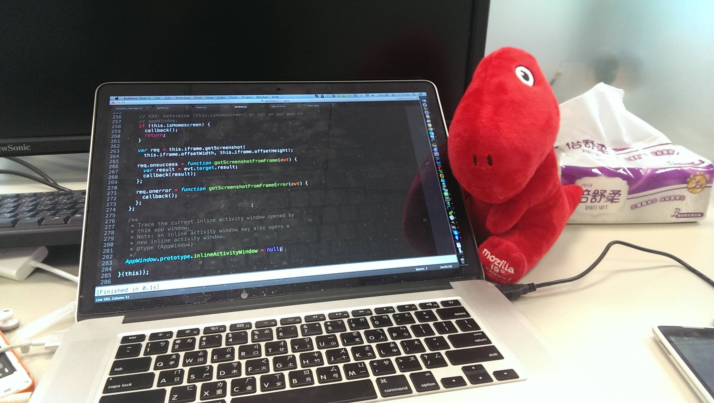

Alive@Mozilla/2013 Q2 Quarter Report
Alive Kuo
Alive@Mozilla/2013 Q2 Quarter Report

Numbers
89 B2G bugs resolved.
Gaia: 9
Gaia::Camera: 3
Gaia::Clock: 1
Gaia::Dialer: 7
Gaia::FMRadio: 1
Gaia::First Time Experience: 3
Gaia::Gallery: 1
Gaia::Keyboard: 1
Gaia::Settings: 8
Gaia::System: 47
Gaia::Video: 6
General: 2
82 patches reviewed.
Gecko level 1 Commiter
Not-a-Number
Trace some gecko codes
Gecko/DOM:Activity
Gecko/DOM:IPC:ProcessPriorityManager
Gecko/DOM:AudioChannel
Software Button Manager
AppWindow Monitor
Patch bgzla(by :gasolin)
Review and present current system app module architecture
Raise Window Manager Redesign Plan
Join Media Control Discussion
var Q3 = new Quarter();
System app API documentation
System app modulization plan
Window Manager redesign plan
System app test coverage
Personal Wish list/Tracking ideas
Trace more mozBrowser API source
Read bugs as much as possible under b2g component
Software backward button implementation
Hardware button event delivery
TrustedUI implementation review
Widget concept (Cost control widget review)
Personal Wish list/Tracking ideas(CONT)
Media control
New Audio Channel API
Remove all hardcoded stuff!!!
Understand calendar + email-lib